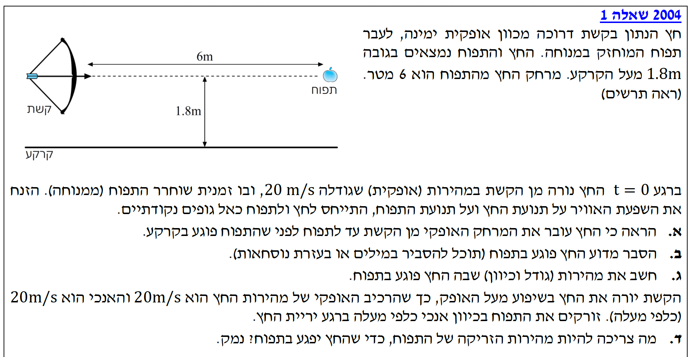
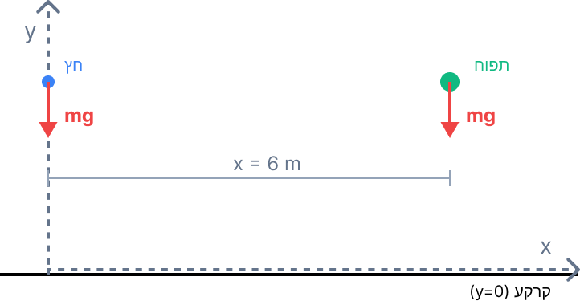

תנועה במישור (זריקה אופקית ומשופעת) • משוואות קינמטיות

לפני שניגש לסעיפים, נגדיר מערכת צירים אחידה לכל השאלה. נבחר את ראשית הצירים \( (x=0, y=0) \) בנקודה על הקרקע שנמצאת בדיוק מתחת לקשת. כיוון ציר ה-\( x \) החיובי יהיה ימינה (לכיוון התפוח), וכיוון ציר ה-\( y \) החיובי יהיה כלפי מעלה. תאוצת הכובד \( g = 10 \text{ m/s}^2 \) פועלת תמיד כלפי מטה. לכן, בציר האנכי התאוצה של כל גוף חופשי תהיה \( a_y = -10 \text{ m/s}^2 \).

להראות כי הזמן שלוקח לחץ לעבור את המרחק האופקי עד לקו של התפוח קטן מהזמן שלוקח לתפוח ליפול עד הקרקע.
שלב 1: נבנה את משוואות התנועה כפונקציה של הזמן עבור כל גוף בנפרד.
עבור התפוח (תנועה אנכית בלבד, משוחרר ממנוחה תחת תאוצת הכובד):
עבור החץ (תנועה אופקית בלבד, גודל המהירות נשאר קבוע כי \( a_x = 0 \)):
שלב 2: מציאת זמן הנפילה של התפוח. נציב את גובה הקרקע \( y_B = 0 \) במשוואת התנועה של התפוח:
שלב 3: מציאת זמן ההגעה של החץ אל קו התפוח. נציב את המרחק האופקי הדרוש \( x_A = 6 \text{ m} \) במשוואת התנועה של החץ:
שלב 4: מסקנה. נשווה בין הזמנים ונראה בבירור כי \( 0.3 \text{ s} < 0.6 \text{ s} \).
משתמשים באותם תנאי ההתחלה של סעיף א'. נזכיר: מצאנו שהחץ מגיע לאותו מיקום אופקי של התפוח ב-\( t = 0.3 \text{ s} \).
להסביר מדוע בנקודת זמן זו (ובהנחה שהתפוח בקו האש), החץ פוגע בו (כלומר, מיקומם האנכי זהה).
נרשום את משוואות התנועה לאורך ציר ה-\( y \) עבור שני הגופים:
נשווה את הנתונים ההתחלתיים שלהם:
מכאן נובע שעבור כל זמן \( t \) חופף באוויר, יתקיים \( y_A(t) = y_B(t) \). בעת הגעת החץ אל ציר ה-\( y \) בו נמצא התפוח (\( t=0.3 \text{ s} \)), שניהם נמצאים בדיוק באותו גובה.
זמן הפגיעה הוא \( t = 0.3 \text{ s} \). המהירות ההתחלתית של החץ היא \( v_{0x} = 20 \text{ m/s} \) ו-\( v_{0y} = 0 \). התאוצה היא \( a_x = 0 \) ו-\( a_y = -10 \text{ m/s}^2 \).
את וקטור המהירות השקול של החץ ברגע הפגיעה (גודל וכיוון ביחס לאופק).
ראשית, נמצא את רכיבי המהירות בזמן \( t = 0.3 \text{ s} \).
רכיב אופקי (\( v_x \)): מאחר ש-\( a_x = 0 \), גודל המהירות נשאר קבוע.
רכיב אנכי (\( v_y \)): גודל המהירות משתנה לפי התאוצה (נפילה חופשית).
כעת, נחשב את גודל המהירות השקולה:
ולבסוף, את הכיוון (הזווית \( \alpha \) ביחס לציר \( x \) החיובי):
המהירות האנכית שלילית, ולכן הכיוון הוא מתחת לציר האופק.
מה צריכה להיות המהירות ההתחלתית של התפוח כלפי מעלה (\( v_{0yB} \)) כדי שהחץ יפגע בו, יחד עם הסבר/נימוק.
שוב, כיוון שהמהירות האופקית של החץ נותרה \( 20 \text{ m/s} \) (התנועה האופקית לא הושפעה מהרכיב האנכי החדש), גם כעת הזמן הדרוש לחץ להגיע למרחק \( x = 6 \text{ m} \) שבו נמצא התפוח הוא \( t_{hit} = 0.3 \text{ s} \).
על מנת שתתרחש פגיעה, חייב להתקיים שוויון גבהים בנקודת הזמן הזו: \( y_A(t_{hit}) = y_B(t_{hit}) \).
נרשום את משוואות הגובה לשניהם ונשווה:
נשים לב שהגובה ההתחלתי \( y_0 \) מופיע בשני האגפים ואפשר לצמצם אותו. כמו כן, איבר תאוצת הכובד \( \frac{1}{2}a_y t^2 \) זהה לחלוטין לשניהם ואפשר גם אותו לצמצם. נישאר עם:
מכיוון שזמן הפגיעה שונה מאפס (\( t > 0 \)), נוכל לחלק ב-\( t \):
לכן, כיוון שנתון \( v_{0yA} = 20 \text{ m/s} \), נדרש שהמהירות ההתחלתית של התפוח תהיה בדיוק זהה.